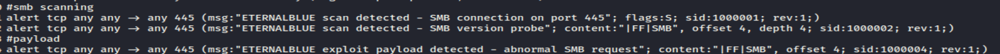

we added some rules to detect the smb scans which targets the port number 445, also we added a rule to detect the probe/payload (in the screen shot its doubled but its the same rule) :

next we added a rule to detect when there's many syn paquets sent to the port 4444 which means that a backdoor is sending some connection requests